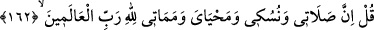

dinlerin mensuplarının nazarında İbrahim (a.s.)’ın saygın bir yeri vardı. Öyle ki,
onlardan her bir gurup, kendilerinin Hz. İbrahim’in dinine mensup olduklarını iddia
ederlerdi. Allah Teâlâ “O, ortak koşanlardan değildi.” buyurarak itikadi ve ameli
yönden İbrahim (a.s.)’a tâbi olduklarını iddiâ eden Mekkeli müşrikleri, “Üzeyr
Allah’ın oğludur.” (et-Tevbe, 9/30) diyen yahudi müşrikleri, “Mesih Allah’ın
oğludur.” (et-Tevbe, 9/30) diyen hıristiyan müşrikleri reddetmektedir.
Hakîkatte ise müşrik, Allah’la beraber bir başka şeye talip olana ve Allah’dan,
Allah’dan gayrısını dileyene denir.
Sa’dî der ki:
Evliyânın Allah’tan, Allah’tan gayrısını
Temennî etmesi tarikate aykırıdır
162. De ki: Şüphesiz benim namazım, kurbanım, hayatım ve ölümüm hepsi
âlemlerin Rabbi Allah içindir.
“De ki:” Bu âyette emrolunan hususlar şerîatın fer‘î hükümleriyle (fürû‘), önceki
ayettekiler ise aslî hükümleriyle (usûl) ilgili olduğu için “De ki” emri, bu ayette de
tekrar edilmiştir.
“Benim namazım,” yani, beş vakit farz namazlarım, “ibadetim,” yani bütün
ibadetlerim, demektir
Nüsük “ibadet”, kendisi ile Allah Teâlâ’ya yaklaşılan her şeydir. Bu sebeble abide,
“nâsik” de denilmiştir.
Burada “namaz” ile kastedilenin (kurban) bayramı namazı, “nüsük” yani ibadet ile
kastedilenin kurban kesmek olduğu da söylenmiştir.
Enes (r.a.)’dan rivayet edildiğine göre Rasûlullah (s.a.) kurban bayramında kurban
etmek üzere semiz bir koç hazırladı. Kurbanı keserken şöyle buyurdular: “La ilahe
illallahu vallahü ekber, inne salâtî ve nüsükî...ve ene evvelü’l-müslimîn” “Allah’dan
başka ilâh yoktur ve Allah en büyüktür. Benim namazım ve ibadetim... ve ben
müslümanların ilkiyim.” (el-En’âm, 6/162-163) sonra da hayvanı boğazladı. Sonra
ise şöyle buyurdu: “Bunun kılları ve yünü, benim kıllarımın cehennemden kurtuluşu
için fidyedir. Derisi, derimin; kanı, kanımın; eti, etimin; kemikleri, kemiklerimin;
damarları, damarlarımın cehennemden kurtuluşu için fidyedir.”
Ashab: “Ey Allah’ın Rasûlü, Allah hayırlı ve mübârek eylesin. Bu sadece sana mı
mahsustur?” diye sordular
Rasûlullah (s.a.): “Hayır, bunlar bana mahsus değildir. Bilakis kıyamete kadar
gelecek olan bütün ümmetime şamildir. Bu haberi bana Cibril, Rabb’imden